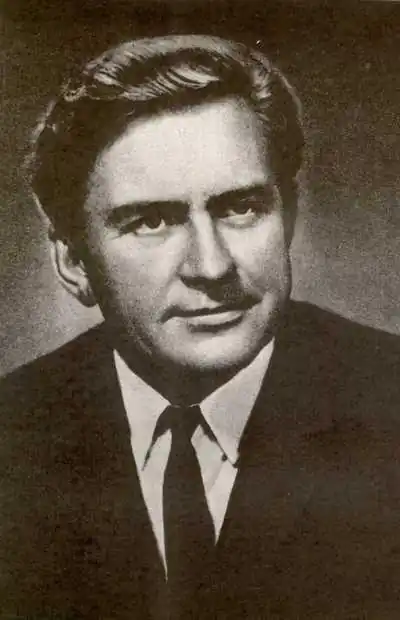

Народився 25 листопада 1925 року в Харкові. Син письменника Дмитра Бедзика.
У 1941 році, після початку німецько-радянської війни, сім'я Бедзиків евакуювалася до Казахстану, де в грудні 1942 року Юрій Дмитрович стає курсантом військового училища. У званні сержанта він був відправлений на фронт, де у складі 3-ї гвардійської танкової армії командував мінометним розрахунком і пройшов фронтовими дорогами від Курська до Берліна, брав участь у форсуванні Дніпра, звільняв Прагу. За бойові заслуги нагороджений орденами та медалями.
В 1949 році закінчив факультет міжнародних відносин Київського університету, потім аспірантуру на кафедрі міжнародно-публічного права. Член КПРС з 1952 року, деякий час працював за кордоном, потім перейшов на викладацьку роботу в Київському університеті. Виступав у пресі зі статтями на міжнародні теми. Працював також у редакціях газети "Літературна Україна" та інших і видавництвах ("Радянський письменник" тощо), очолював художній відділ Кіностудії імені О. П. Довженка. Член Спілки письменників СРСР, секретар Київської спілки письменників України. Двадцять років (з 1978 по 1998) був головою Українського відділення Радянського фонду миру. Жив у Києві, в останні роки був заступником Голови конгресу літераторів України. Помер 17 серпня 2008 року. Похований на Байковому кладовищі. Творчість У літературі дебютував як поет, опублікував вірші в армійській газеті. Друкуватися як прозаїк почав з 1954. Написав понад 40 книг у різних жанрах, сценаріїв і п'єс, поставлених театрами. Перша книга — збірка оповідань "Поруч з тобою" (1956). Проблемам суспільного та гуманістичного обов'язку працівників науки присвячено роман "Альма-матер" (1964) і повість "Над планетою — "Левіафан"" (1965). Події Другої світової війни та армійське життя стали темами романів "Полки ідуть на переправу" (1959), "Честь мені дорожча" (1967), "Чорний лабіринт" (1991), збірки прози "Вас чекають, тридцятий" (1986), "Дуель. Капітан і Марта" (1989). У романах "Блакить" (1973), "Розкрилля" (1974), "Поверх-42" (1977), "Довге повернення" (1981) зображено життя і працю робітників. Міжнародна проблематика — у центрі роману "Кожна хвилина життя" (1984), п'єси "Врятуйте доктора Рейча!" (1986). У співавторстві з О. Бердником написав гостросюжетну науково-фантастичну повість "Людина без серця" (1957), присвячену трансплантації людського серця. Це було науковим передбаченням (уперше пересадка серця здійснена 1967). У пригодницькій повісті "Великий день інків" (1989) змальовано радянську експедицію наукову в одну з південноамериканських країн. Автор роману про Голодомор 1932–1933 "Гіпсова лялька" (1989), романів про Другу світову війну "Чорний лабіринт, або Довгий шлях в Альпи" (1992) і "Про що не доповідали фюреру" (1996), фантастичних романів "Любов, Президент і парадигма космосу" (2002) і "Меч Торквемади" (2003), повісті "Штормове попередження" (2005), п'єс "Лицарів не судять" (1980), "Чотири жінки біля ставу" (1984) та інших творів. Спогади дитинства поклав в основу роману "Дім сумних душ" (2005) про трагічні події 1930-х у будинку письменників "Слово" в м. Харкові, зокрема про самогубство М. Хвильового. Переклав з німецької мови роман Б. Узе "Патріоти" (1958), дитячу пригодницьку книжку В. Мейнка "Незвичайні пригоди Марко Поло" (1959). Твори Бедзика перекладені англійською, іспанською, латиською, молдавською, польською, російською, словацькою, угорською та французькою мовами. Нагороди та визнання Нагороджений орденом Вітчизняної війни ІІ ступеня (1985), Почесною відзнакою Президента України (1995). Лауреат премії Міністерства оборони СРСР (1968) за роман "Честь мені дорожча", премії Національної спілки письменників України імені Андрія Головка (2000) за роман "Сім таємниць великої війни". Посів друге місце на конкурсі "Книжковий дивосвіт України" в категорії "Найкраще літературно-художнє видання" (2002) за роман "Любов, президент і парадигма космосу".